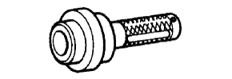
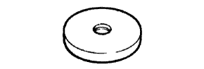
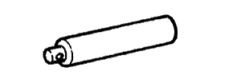

TRANSFER ASSEMBLY > REASSEMBLY > Preparation

 | 09223-15020 | Oil Seal & Bearing Replacer |
|  | 09223-46011 | Crankshaft Front Oil Seal Replacer |
 | 09316-60011 | Transmission & Transfer Bearing Replacer |
 | (09316-00011) | Replacer Pipe |
| (09316-00031) | Replacer B | |
| (09316-00071) | Replacer F | |
 | 09330-00021 | Companion Flange Holding Tool |
| 09515-30010 | Rear Wheel Bearing Replacer | |
| 09631-32020 | Seal Ring Tool | |
| 09649-17010 | Steering Knuckle Tool | |
 | 09950-60010 | Replacer Set |
| (09951-00320) | Replacer 32 | |
| (09951-00570) | Replacer 57 | |
|  | (09951-00590) | Replacer 59 |
 | 09950-70010 | Handle Set |
|  | (09951-07100) | Handle 100 |
| Dial indicator with magnetic base | - |
| Micrometer | - |
| Torque wrench | - |
| Plastic-faced hammer | - |
| Vernier caliper | - |
| Item | Capacity | Classification |
| Transfer gear oil LF | 1.4 liters (1.5 US qts, 1.2 Imp. qts) | SAE 75W |
| Toyota Genuine Seal Packing 1281, Three Bond 1281 or Equivalent | - |
| Toyota Genuine Adhesive 1344, Three Bond 1344 or equivalent | - |